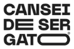

Clientes sem resposta
Conversas importantes ficam interrompidas e sua equipe perde contato com os clientes.
Se sua empresa recebeu uma mensagem de banimento do WhatsApp ou enfrenta bloqueios por spam, profissionalize sua operação com a API Oficial e uma plataforma preparada para atendimento em escala.
Descubra como operar seu WhatsApp Business com mais controle, segurança e produtividade.


O WhatsApp se tornou um dos principais canais de atendimento e vendas das empresas. Quando um número é bloqueado ou banido, toda a operação pode ser impactada.
Alguns sinais são bastante conhecidos:
Para empresas que dependem do WhatsApp todos os dias, um bloqueio pode significar oportunidades perdidas, clientes sem resposta e equipes paradas.
Conversas importantes ficam interrompidas e sua equipe perde contato com os clientes.
Leads que estavam avançando podem deixar de receber respostas e procurar concorrentes.
Quando toda a operação depende de celulares e contas individuais, informações importantes podem ficar espalhadas.
Sem uma estrutura profissional, diferentes atendentes podem disputar conversas, repetir respostas e perder oportunidades.
Opere seu atendimento utilizando uma estrutura preparada para empresas.
Vários agentes podem atender clientes sem depender de diferentes celulares.
Organize filas, setores, responsáveis e históricos em uma única plataforma.
Automatize as primeiras interações e mantenha seu atendimento disponível 24 horas.
Operação convencional
Com a Cxpress
Se o WhatsApp é um canal estratégico para sua empresa, sua operação precisa estar preparada para atender clientes em escala.
A Cxpress permite integrar o WhatsApp a uma estrutura profissional de atendimento, centralizando conversas, equipes, históricos e automações em um único ambiente.
Além do WhatsApp, a Cxpress permite que sua equipe centralize diferentes canais de atendimento em uma única fila. Assim, seu cliente pode começar uma conversa pelo WhatsApp e continuar sendo atendido sem perder seu histórico.
Equipe de atendimento
Reduza o volume de interações manuais automatizando as primeiras etapas do atendimento.
A IA da Cxpress pode compreender mensagens em linguagem natural, responder perguntas, realizar triagens e encaminhar o atendimento para a equipe responsável quando necessário.
Isso ajuda sua empresa a responder mais rápido sem depender exclusivamente de atendentes humanos para cada nova mensagem.
Agende uma demonstração gratuita da plataforma
O bloqueio pode acontecer quando o WhatsApp identifica atividades que violam suas políticas ou padrões considerados inadequados. Para empresas, é importante revisar a forma como o canal está sendo utilizado e estruturar uma operação baseada nas soluções oficiais disponibilizadas pelo WhatsApp.
Essa mensagem pode indicar que a conta recebeu uma restrição ou banimento. Dependendo do caso, o próprio WhatsApp pode disponibilizar opções de revisão da decisão.
Empresas devem adotar boas práticas de comunicação, respeitar as políticas do WhatsApp, evitar abordagens inadequadas e utilizar soluções oficiais para estruturar suas operações de atendimento.
A utilização de soluções oficiais não significa que uma empresa possa ignorar as políticas do WhatsApp. No entanto, permite estruturar uma operação empresarial dentro dos recursos disponibilizados oficialmente pela plataforma e com maior controle dos processos de atendimento.
Sim. Com uma plataforma de atendimento integrada ao WhatsApp, diferentes agentes podem atender clientes de forma organizada, com filas, setores e históricos centralizados.
Centralize seu atendimento, utilize a API Oficial do WhatsApp, organize sua equipe e automatize interações com Inteligência Artificial.
Conheça a Cxpress e descubra como profissionalizar o atendimento da sua empresa pelo WhatsApp.
Agende uma demonstração gratuita da plataformaEm 30 minutos, um especialista mostra a plataforma com o seu cenário: o número que você já usa, os canais que já atende e o que muda com a API Oficial ativa.
Preencha os dados e continue a conversa com um especialista no WhatsApp.
Pedido enviado. Abrimos a conversa com um especialista numa nova aba. Se ela não abriu, toque aqui.
Carregando o formulário…